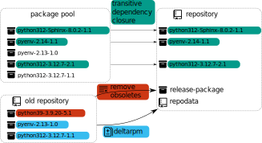

How openSUSE is built
From source code to an installation disk
who -u
Dan Čermák
| Software Developer @SUSE, SLE BCI Releng | |
| Developer Tools, Testing and Documentation, Home Automation | |
| https://dancermak.name | |
| dcermak | |
| @Defolos@mastodon.social |
Why even build a distribution?
Just pip/npm/cargo install everything!
$ pip3 install pysqlite3
...
Failed to build pysqlite3
Installing collected packages: pysqlite3
Running setup.py install for pysqlite3 ... error
error: subprocess-exited-with-error
× Running setup.py install for pysqlite3 did not run successfully.
oops ü´†
From Sources to an Installer
A long time ago…
$ cat INSTALL
BASIC INSTALLATION
On most Unix systems, you build Emacs by first running the
'configure' shell script. This attempts to deduce the
correct values for various system-dependent variables and
features, and find the directories where certain system
headers and libraries are kept. In a few cases, you may
need to explicitly tell configure where to find some things,
or what options to use.
Ain't no body got time for that (╯°□°）╯︵ ┻━┻

It starts with Packages

Deliverables
- disk images
- installation ISOs
- container images
- binary packages
- repositories
Parts of a Build System

RPM packages
Flatpacks
- binaries including all dependencies
Build system

Repository Assembly

Testing/QE

The Factory Process

Questions?
Answers!